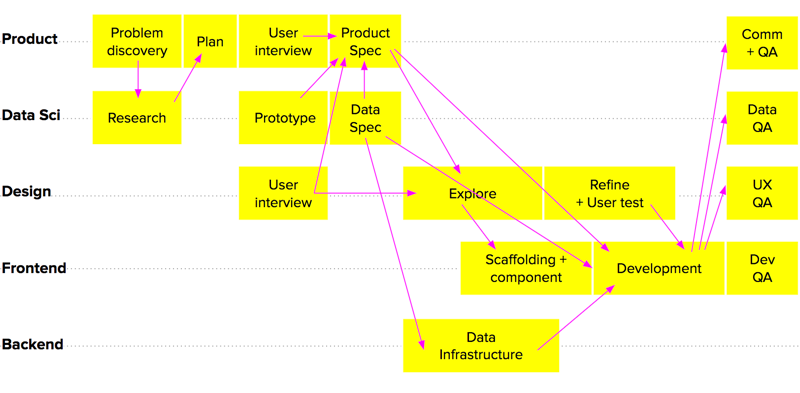
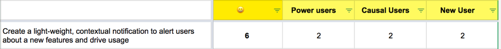
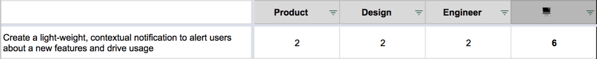
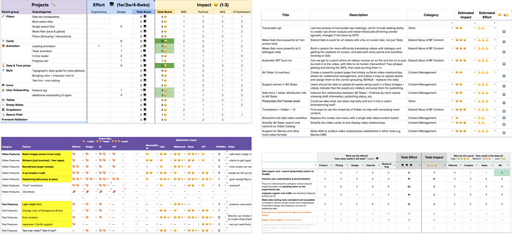

Impact ✕ Effort Framework
A simple framework to visualize and measure project for prioritization
Sequencing the projects for a cross-disciplined team is a constant challenge. As part of a team that builds internal analytic tools, our projects often have multiple dependencies among ourselves and with other teams that are crisscross throughout the life cycle of a product development:

🤔 What is the best way to evaluate and measure different ideas simultaneously?
This is where Impact x Effort framework comes in
To make prioritization easier, I create a simple method to evaluate each idea by visualizing user impact and effort with a scoring system. It is intended to quantify impact and effort for each project in a measurable way that allows us to compare them, and discuss/debate/negotiate their priority.
Impact is the “why” behind a product feature with two questions:

Effort quantify the “how” behind a product feature with two questions:

The total scores will inform the size of tasks and influence. For example:
Does it work?

Free free to download or duplicate the spreadsheet for your use. Email me if you have any idea for improvement.